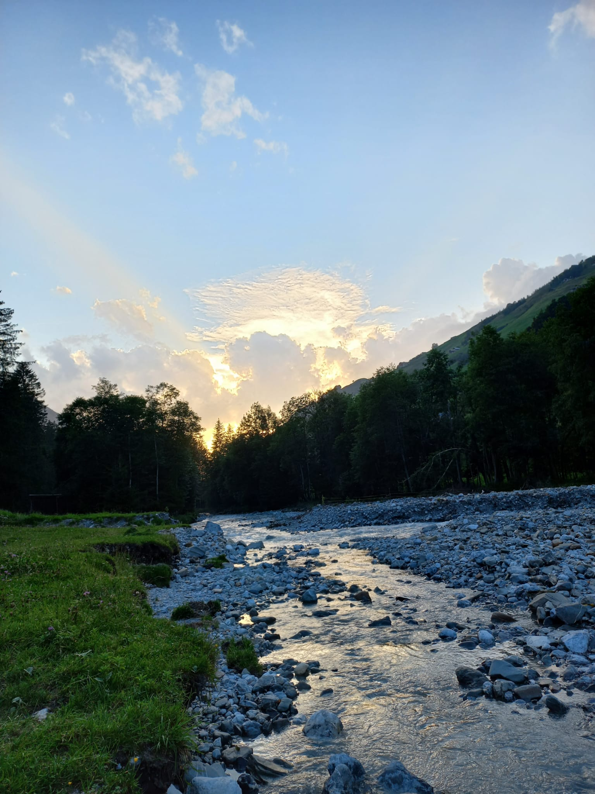
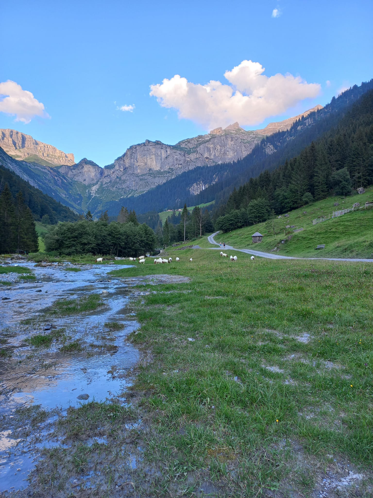
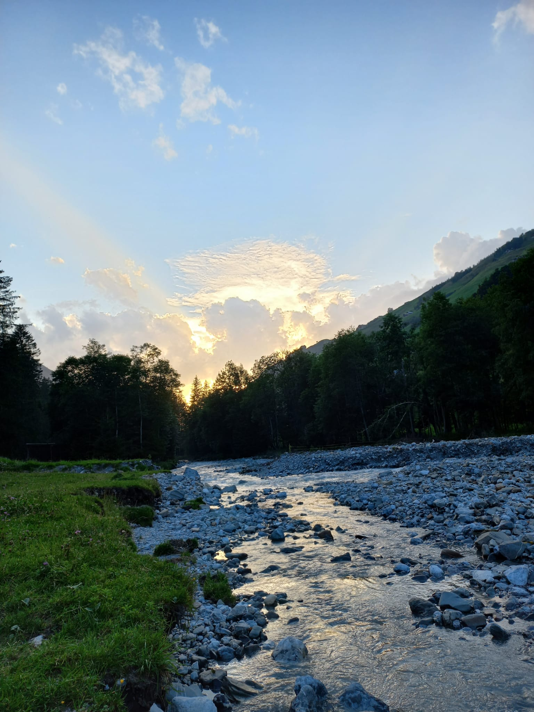
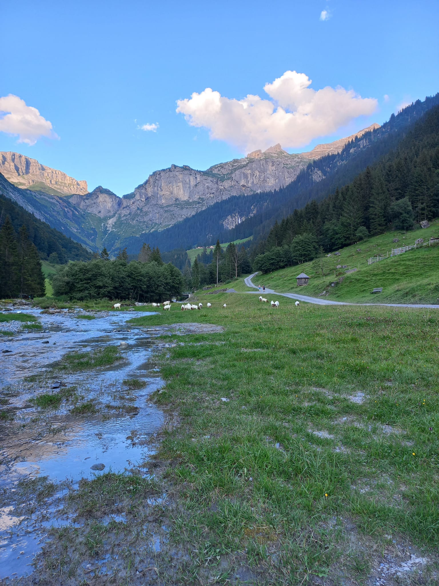
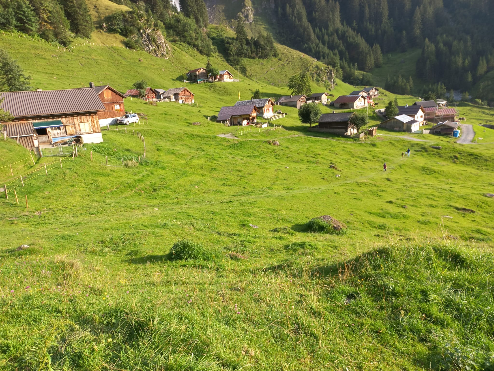
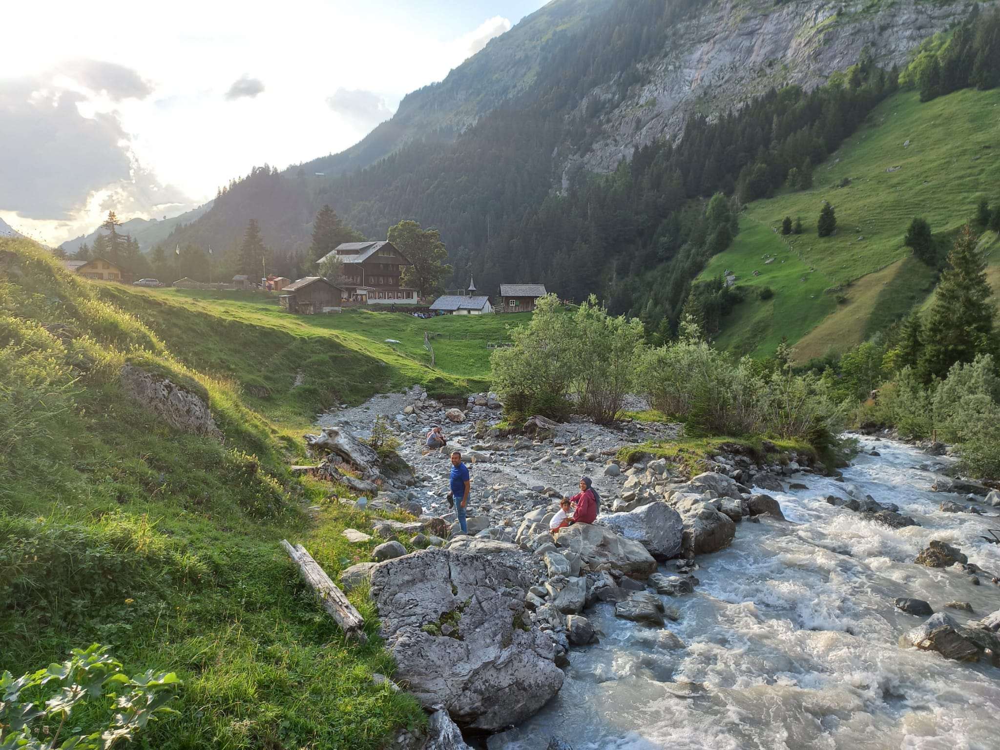
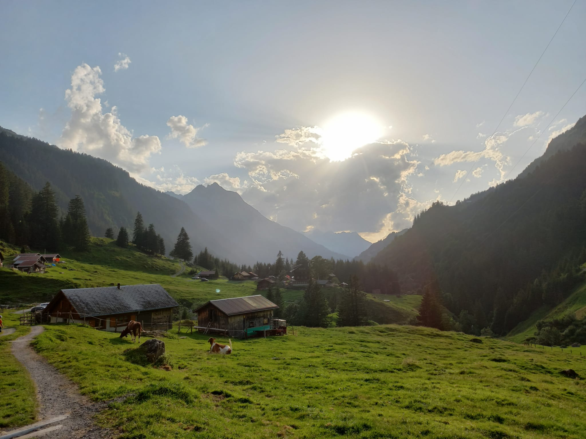
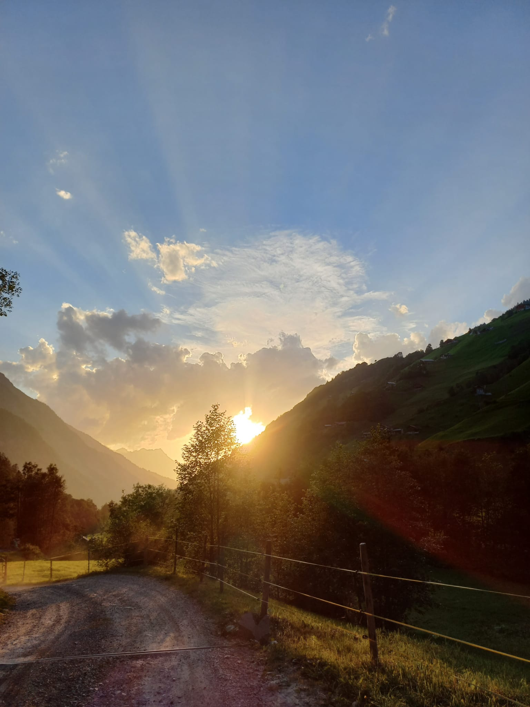
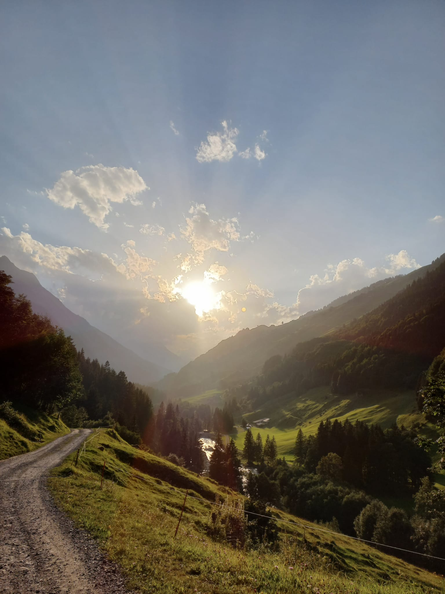

Unterschächen, deniz seviyesinden yaklaşık 1000 m yükseklikte yer almaktadır ve dinlendirici yürüyüşler veya yorucu dağ turları için harika bir başlangıç noktasıdır. Büyük Ruchen, Schärhorn veya Clariden gibi üç bin metrelik etkileyici zirvelerle çevrili, çok sayıda yürüyüş ve dağ turu seçeneği var. Elektrik santrali Äsch'e doğru yavaş bir yürüyüş yapın ve 100 metre yüksekliğindeki Stäuben şelalesine yakından hayran kalın. Veya Brunnital'e koşun: vahşi ve romantik vadi, el değmemiş doğası ve sarp kaya yüzleri ile etkileyicidir. Ruchen'in kireçtaşı duvarına giderken Sittlisalp teleferiğini geçeceksiniz. Bu sizi birkaç dakika içinde Sittlisalp Alp peynir mandırasını ziyaret edebileceğiniz, Alp Obsaum'daki Alp tavernasında serinletici bir içeceğin tadını çıkarabileceğiniz veya Seewlisee'den manzaranın keyfini çıkarabileceğiniz Sittlisalp'e götürür. Klausen Geçidi'ne bir gezi de buna değer. Oradan Schächentaler Höhenweg'i başlatın ve Schächental boyunca Eggberge'e kadar yürüyüş yapın. Veya fırsatı kullanın ve doğal tarih parkurunda farklı Alpleri ziyaret edin: Chammlialp'ten Oberalp'e, ardından Niederalp üzerinden Wannelenalp'e ve teleferikle Unterschächen'e.
  Aktiviteler ve görülecek yerler yürüyüşten bir değişiklik mi arıyorsunuz? Ardından Bielen kereste fabrikasını ziyaret etmenizi öneririz. Tarihi kereste fabrikası 1850'den kalmadır ve Brunnital'in girişinde yer almaktadır. SBB Gotthardberg güzergahının inşası sırasında bir İtalyan taş ustası tarafından 1870 civarında oyulmuş kereste fabrikasının tepesinde bir granit çeşme var. Eski kaplıcadan çıkan tüpten akan kristal berraklığındaki su, herkesin içmesi için var. Piknik alanı ve üstü kapalı şöminenin kullanımı ancak önceden kayıt ile mümkündür. Bielen-Säge, aile kutlamaları, şirket gezileri, okullar ve aperatifler için popüler bir buluşma yeridir. Veya yeni bir şey deneyin - bir Segway turuna ne dersiniz? Tamamen vücut ağırlığınızı değiştirerek kontrol edilen, kendi kendini dengeleyen, iki tekerlekli yüksek teknoloji ürünü bir elektrikli araç kullanın. Mountainwheels GmbH'nin rehberli turlarında Unterschächens'in güzel doğasını keşfedebilirsiniz. Ayrıca Unterschächen çevresinde bisikletle birçok harika rota bulacaksınız. Unterschächen köyünü biraz daha yakından tanımak ister misiniz? Ardından bir keşif yolculuğuna çıkın ve barok mezarlığı veya birçok şapelden birini ziyaret edin.
 